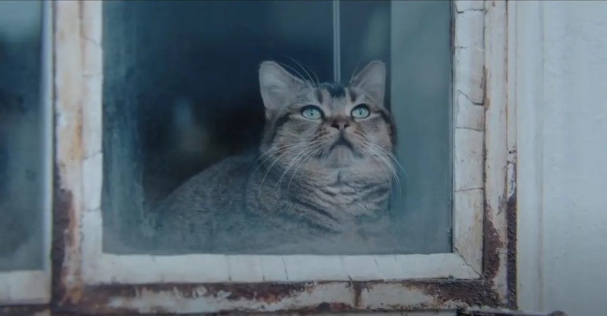
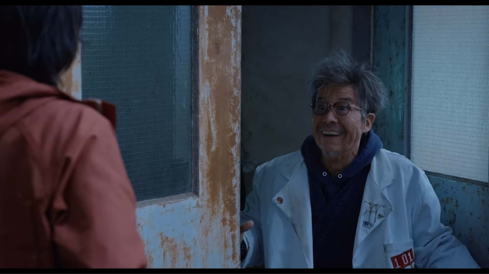
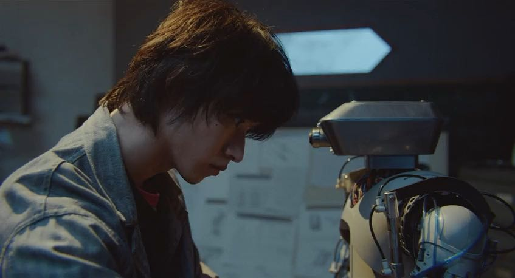
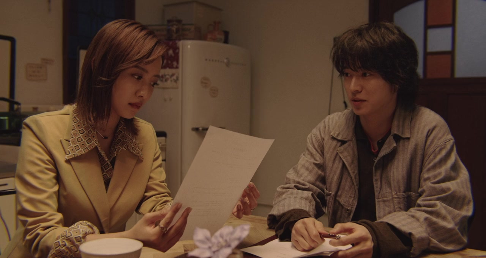

The door into summer
   
Synopsis
In 1995, Soichiro Takakura (Kento Yamazaki) is a scientist and works on developing a robot. He is also on the verge of completing a plasma storage battery, following the wishes of the deceased Koichi Matsushita. He was a friend of Soichiro Takakura's late father. Outside of work, Soichiro Takakura has peaceful days with his cat Pito and Riko (Kaya Kiyohara), who is the daughter of Koichi Matsushita. He is soon betrayed by his business partner and also by his fiance Rin Shiraishi (Natsuna Watanabe). Soichiro Takakura loses control of his company and the work he has done on the robot and plasma storage battery. Soichiro Takakura then opts to place himself into a "cold sleep" freezing machine, hoping to find a better future. When he wakes up, he discovers that he is in the year 2025.
Kento Yamazaki;Kaya Kiyohara ;Natsuna Watanabe
Genre:science fiction tale
Pg: Not Rated
Hours playing:
2:00pm-4:00pm
4:00pm-6:00pm
10:00pm-12:00am